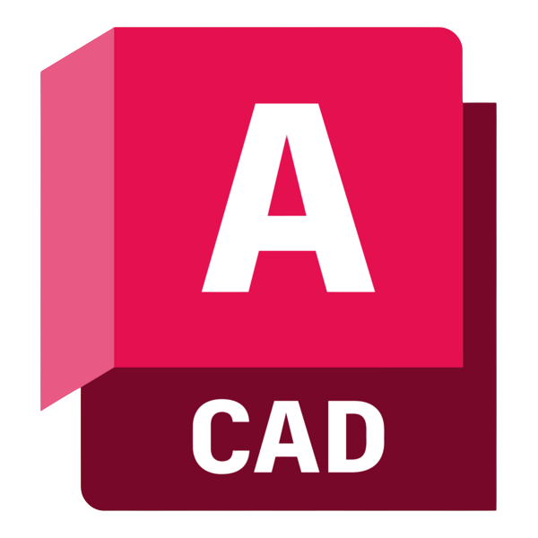
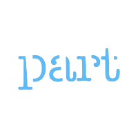
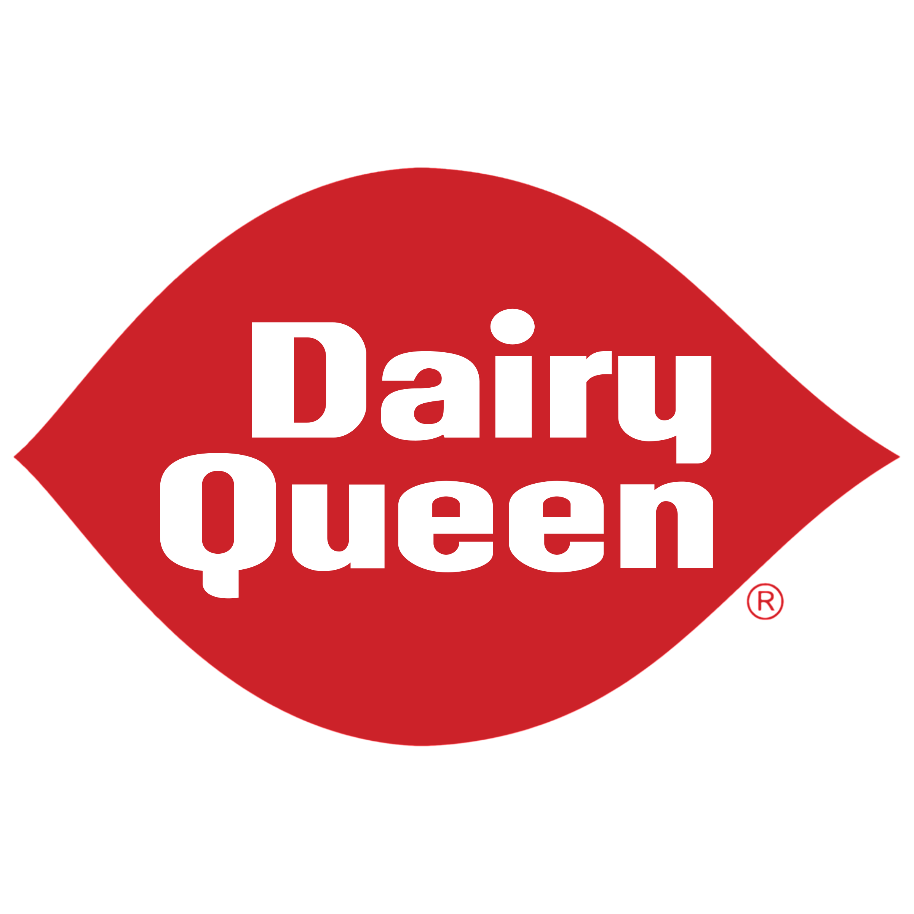
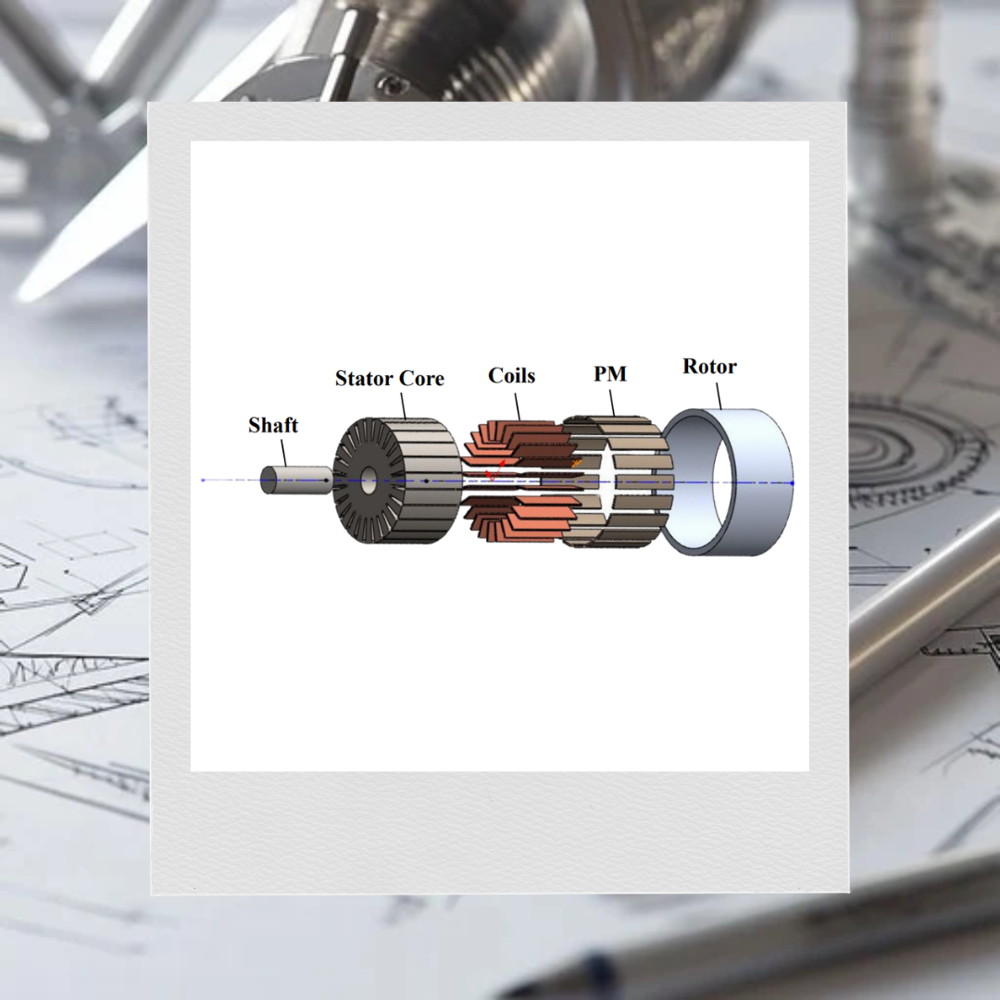
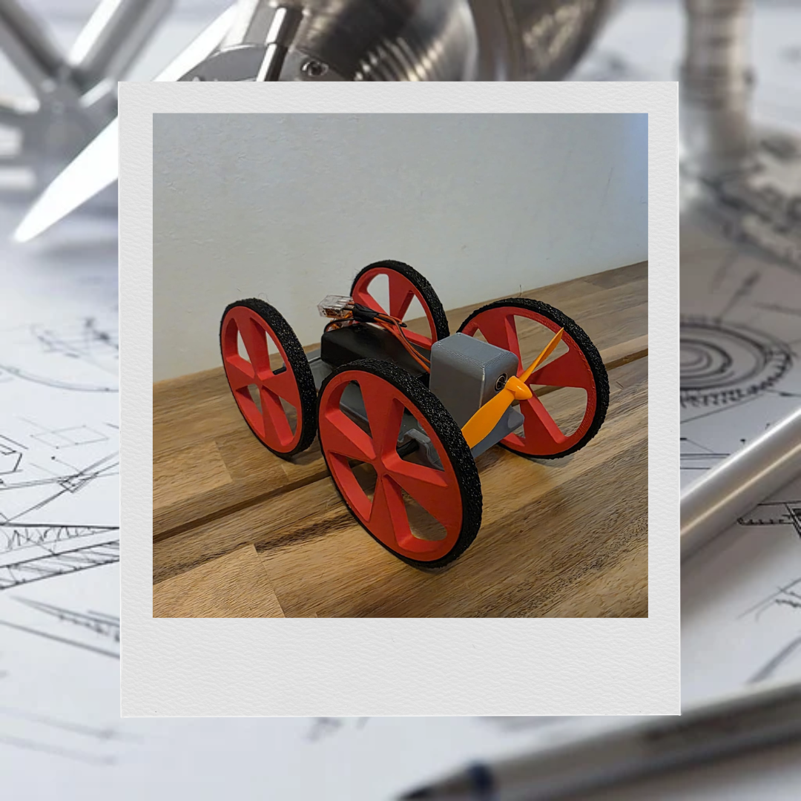

May 2024 - Aug 2025
Mechanical Engineering Intern
AGS Automotive Systems
Built 20+ part and process models in SolidWorks, updated AutoCAD schematics, and used MOST time studies to support changes that cut process time by 15%.

Mechanical Engineering Portfolio
.png)
Projects and work from University of Toronto, internships, and personal builds. I like taking ideas through CAD, prototyping, and testing until they become something real.
Engineering ExperienceA few roles and projects that shaped how I work. Most of them sit somewhere between design, manufacturing, communication, and hands-on problem solving.




Education & Approach
That is the thread running through most of my coursework, internships, and side projects.
Education
BASc in Mechanical Engineering
PEY Co-op, Minor in Engineering Business, and EV Design certificate.
Selected coursework: Mechanical Engineering Design, Kinematics and Dynamics of Machines.
How I Work
Analysis & Build
Additional Tools
Coursework, team builds, and personal projects that I still like showing.
Team projects from coursework, clubs, and capstone work.

APS380 | EV Design
Built a scaled dual-motor AWD platform to show drivetrain layout and torque distribution.

Capstone | UTWind
Designed a custom direct-drive generator for UTWind's 2026 turbine, targeting low-RPM output and low starting torque.

MIE540 | Product Design
A compact propeller-driven car we tuned around speed, safety, and a realistic toy-market price point.

MIE301 | Robotics
Redesigned a sample-collecting robotic arm for Io by moving from a rover-mounted concept to a drone-mounted one.

MIE346 | PCB Design
Designed and built a PCB that scaled and filtered a low-voltage analog signal.

MIE315 | Sustainability
Compared wood and plastic housings for Google Home speakers through cost, environmental, and social analysis.

MIE243 | Reverse Engineering
Reverse-engineered several devices and rebuilt them in SolidWorks.

MIE243 | Machine Design
Designed a desktop pick-and-place concept for PCB assembly with a focus on accuracy, modularity, and cost.

APS112 | Experimental Design
Built a two-variable teaching device for APS112 so students could learn DMAIC through physical experiments.
Earlier builds and side projects that still say a lot about how I like to make things.

High School | Woodworking
One of my earlier woodworking projects from high school. It taught me how to take raw material and turn it into something finished and usable.

High School | Woodworking
A high school woodworking project that taught me how much small measurement errors matter.

Creative Project | Writing
An original short story I wrote and formatted as an EPUB for a scholarship submission.

George Brown | Machining
My first metal machining project, completed through a short George Brown course that ran across two Saturdays.

High School | Woodworking
My first construction project from high school. It is still hanging in my backyard today.

High School | Aerodynamics
My first project ever, a small racing car powered by a CO2 canister that got me interested in aerodynamics and performance.
LinkedIn has the fuller work history and skills list if you want that alongside the projects here.
LinkedInWhat pulled me into engineering was seeing an idea go from concept to reality. I like the stretch from CAD to prototypes, testing, and the small revisions that make something finally feel right.
I am most drawn to mechatronics, manufacturing, EV systems, and product development. I like work where design, fabrication limits, performance, and team coordination all matter at once.
Photography, writing, and cinematography are where I slow down and notice more. They sharpen the same instincts I use in engineering: composition, patience, detail, and how the finished thing will land with someone else.

Taken and modeled by me.

Built around a tight focus on one subject.

A photo built around symbolism.

Unsplash is where I post most of my photography. If you want to see more of that side of my work, you can find it there.
Unsplash
"Mohid, you did a great job on check-in #2. I saw that you listened to my previous comment and did an excellent job on the presentation, and I appreciate your mindful application of feedback. I just wanted to mention that you are an essential part of this team and have more self-confidence; please easily say your ideas and comment to the rest of the group; there is no wrong answer, and we can use your thoughts more in this project. Overall I'm lucky to have you on my team."
"Mohid has displayed a strong work ethic and reliability in this group. He has taken the initiative to delegate responsibilities on numerous occasions. One thing that all the team members, including myself, can work on for the future is ensuring more clear and frequent communication between one another."
"Mohid has shown extraordinary communication skills and reliability throughout this project. He has done a good job of helping the group meet important deadlines and organize our tasks. In the future, Mohid can continue to contribute to the group in the same way that he has been doing so, as his contributions are deeply valued by our team."
Open To Conversations
If you are reaching out about engineering roles, collaboration, or something you saw in the portfolio, I would be glad to hear from you.
The form is the easiest way to send a quick note, and the email options are here if you would rather contact me directly.
Best for academic, student team, and campus-related outreach.
Best for professional opportunities, collaborations, and general inquiries.
A short hello, opportunity, or project question is more than enough.